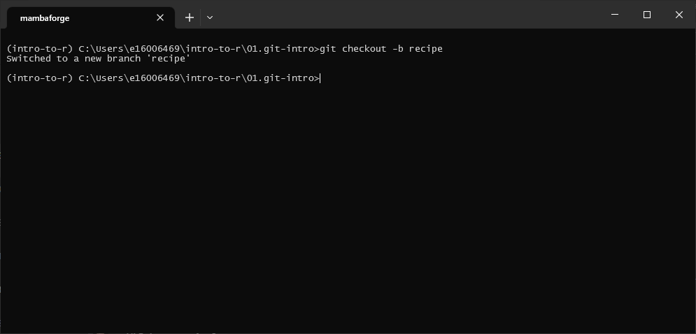
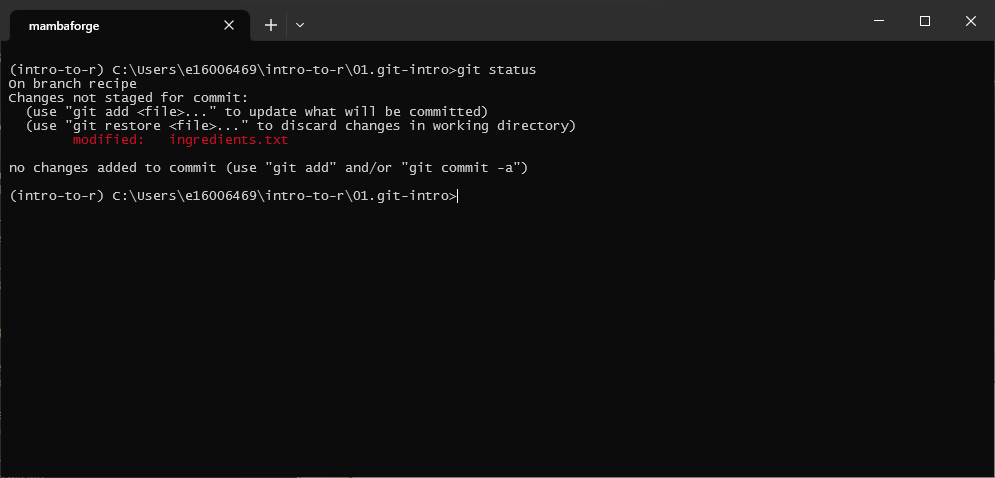
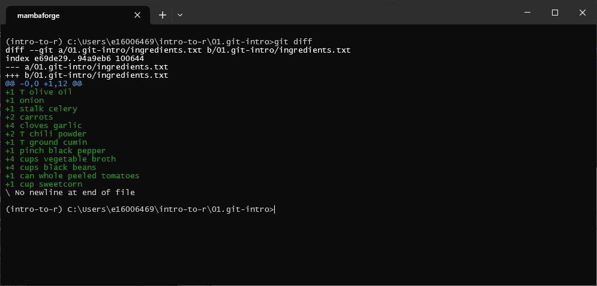
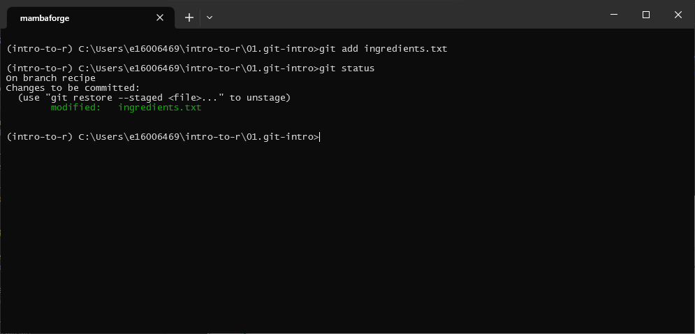
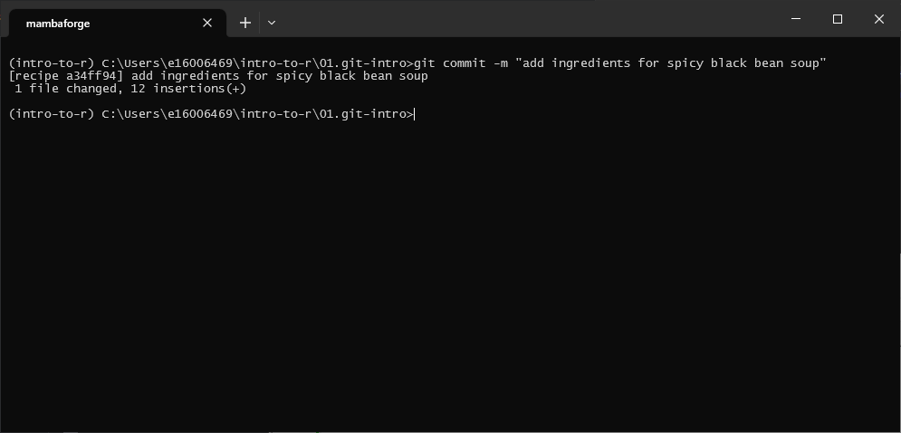
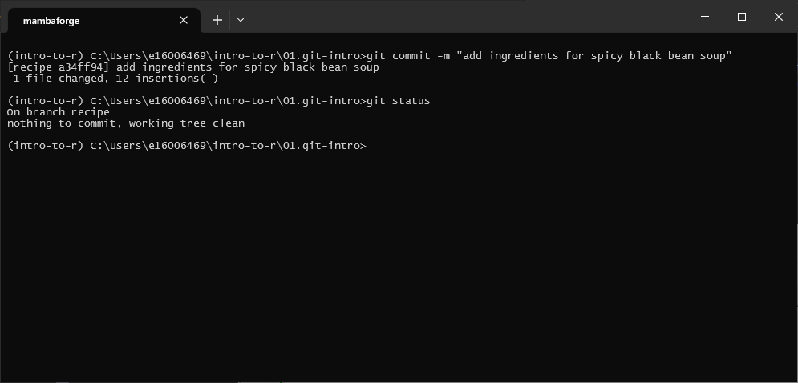

introduction to version control using git#
In this exercise, we’ll get some practice using the git command-line interface for keeping track of the contents of a folder.
{kind=link}
{kind=link}
creating a new branch#
Before we do that, though, we’ll create a new branch to our repository - this way, we can work on developing our
recipe without causing any problems with the main branch.
For this, we’ll use the git checkout command, along with the -b flag:
git checkout -b <branch name>
Let’s call the new branch recipe, so the full command will be:
git checkout -b recipe
You should see the following message output:
{kind=link}
And that’s it. We can check what branches git is currently keeping track of using the git branch command:
{kind=link}
Here, we have two branches: main, the default/main branch of the repository, and recipe, the new branch
that we just checked out. We can tell what branch we are currently working on by the color (green), as well as the
asterisk (*) to the left of the branch name.
editing the recipe#
Now that we have our new branch, let’s make some changes to our files. First, open ingredients.txt in a text editor (Notepad, Notepad++, or something similar, NOT MS Word!):
In this file, let’s add the following ingredients:
1 T olive oil
1 onion
1 stalk celery
2 carrots
4 cloves garlic
2 T chili powder
1 T ground cumin
1 pinch black pepper
4 cups vegetable broth
4 cups black beans
1 can whole peeled tomatoes
1 cup sweetcorn
Save the file (CTRL + S), but don’t close the window just yet.
git status#
Back in the Anaconda Command Prompt window, let’s see how we can use git to check the status of the files in our repository, using git status:
git status
You should see something like this:
{kind=link}
This tells us the following information:
we are currently on the
recipebranchthere are changes to the ingredients.txt file that have not been saved.
git diff#
If we want to see what changes, specifically, have been made, we can use git diff:
git diff
By itself, this tells us the changes that have been made to all files:
{kind=link}
The very first line of the output:
diff --git a/01.git-intro/ingredients.txt b/01.git-intro/ingredients.txt
Tells us that we’re looking at 2 versions of the same file: the old version (a), and the new version (b).
We’ll ignore the next line for now, but the next two lines:
--- a/01.git-intro/ingredients.txt
+++ b/01.git-intro/ingredients.txt
Tell us that the minus sign in the diff markup corresponds to the old version, while the plus sign corresponds to the new version.
Next, this:
@@ -0,0 +1,12 @@
Tells us what the chunks of the files that git diff is showing. On the left, -0, 0 means that we’re seeing the
old version of the file starting at line 0, and the chunk is 0 lines long. On the right, +1,12 means that we’re
seeing the new version of the file starting at line 1, and the chunk is 12 lines long.
Next, we can see the actual changes: a + (typically colored green) at the start of the line indicates that this
line is in the new file, while a - (typically colored red) indicates that the line is in the old file.
Because the original version of the file is blank, all we should see here are additions - the same lines that we just added to ingredients.txt.
staging changes#
Now that we’ve added our ingredients, let’s get ready to commit the changes. Remember that this is a two step process: first, we have to stage our commits, using git add.
To stage ingredients.txt, enter the following command:
git add ingredients.txt
If we use git status again, we should see that we have changes “to be committed” for one file:
{kind=link}
committing snapshots#
At this point, let’s tell git to take a snapshot of our progress, using git commit.
For short commit messages, we can use this command with the -m flag:
git commit -m "this is a commit message"
Remember that we want our commit messages to:
be short - we don’t need to write pages and pages about what changes have been made;
explain what was changed. For a longer commit message, this happens in the title; for shorter commit messages, such as those written using git commit -m, the title is the commit message;
explain why something was changed. For a longer commit message, this happens in the body; for shorter commit messages, this happens in the title.
We should also be specific - remember that you are writing these for “future you” as much as for anyone else, so try to write something that will still be clear to you several years from now!
In this commit, we have added a number of ingredients to our recipe, so a good commit message might say this:
git commit -m "add ingredients for spicy black bean soup"
As soon as you press ENTER, you should see the following message:
{kind=link}
This shows us the branch (recipe), as well as the hash corresponding to the commit; it also shows us
the commit message (or title for a longer commit message); it also tells us how many files have been changed, and how
many lines were changed and how.
Now, run git status again to see the current state of the working directory:
{kind=link}
adding instructions#
Now that we’ve added ingredients, we should also make sure to include instructions for our recipe. Open up instructions.txt file (again, using a text editor!), and add the following instructions:
1. Chop onion, celery, carrots, and garlic.
2. Heat oil in a large pot over medium-high heat.
3. Saute onion, celery, and carrots for 5 minutes until soft, then add garlic. Stir for 1 minute.
4. Season with chili powder, cumin, and pepper; cook for 1 additional minute.
5. Stir in broth, 2 cups of beans, tomatoes, and corn; bring to a boil.
6. Blend remaining beans until smooth, then stir into soup.
7. Reduce heat to medium, and simmer for 15 additional minutes.
Now, stage these changes using git add:
git add instructions.txt
and commit the changes using git commit:
git commit -m "add instructions for cooking spicy black bean soup"
git log#
One way that we can keep track of the history of our repository is using git log, which allows us to scroll through all of the different snapshots:
git log
{kind=link}
This shows the commit history of the project in reverse chronological order, starting with the most recent. You
can see, for example, that the commit to add instructions for cooking the soup are at the top, showing the full hash
of the commit, the author of the commit, the date and time, and the title of the commit message.
You can also see this at the top:
(HEAD -> recipe)
We won’t worry too much about what this means right now, but effectively HEAD means “the currently checked out
commit in the working directory”; it also tells us that the current branch checked out is recipe. Whenever you add
a new commit, you see that HEAD updates to point to this most recent commit.
Further down, you can see this:
(origin/main, origin/HEAD, main)
This is the most recent commit on the local main branch, as well as the most recent commit in the remote repository
(origin).
If you want to see what files were changed with each commit, you can use –stat:
git log --stat
{kind=link}
customizing the recipe#
Now that you have worked through some of the basics of using git to keep track of the files, it’s time to spend some time working on customizing and perfecting your soup recipe. For example, you might:
decide that 2T of chili powder is far too much (or not nearly enough);
want to add additional herbs or spices, such as ground coriander, oregano, or epazote;
want to make it clear to use cooked beans (clarity is important!)
Whatever changes you make, remember to stage and commit them as we have practiced. Make sure that you also have a look at tools like git diff and git log as you go, so that you see how things change as you continue to update the files in the repository.
merging branches#
Once you have finished perfecting your soup recipe, it’s time to combine this branch with the main branch. To do
this, you can first check out the main:
git checkout main
Once you are back on the main branch, you can merge (combine) the two branches using git merge:
git merge recipe
This will update the current branch (main) with all of the changes committed to the recipe branch. You should
see something like the following output:
{kind=link}
Once all of the changes from a branch have been merged into main, it can be a good idea to delete that branch,
to help keep the “tree” nicely pruned:
git branch -d recipe
notes#
next steps#
That’s all for this lesson. If you are interested in continuing learning how to use the git command-line interface, learn git branching has a number of interactive exercises to help you practice and develop your skills.
If you’re not sure that the command line is for you, that’s okay! You can download GitHub Desktop (Windows and MacOS only), which provides a graphical user interface for git.